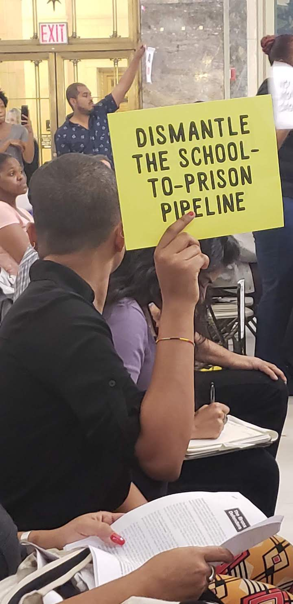

Advocates Call for More Counselors in Bronx Schools
By: Brenda Leon
When William Pagan began working as a teacher in The South Bronx, he became frustrated for not being able to support his students when they would stop showing up to school.
“I was a teacher for 6 years and when I would see my students dropping out and not being able to hold one on one conversations with them, I became frustrated. This is what triggered me to become a counselor.” said Pagan.
Pagan has been a counselor for 17 years and his role is supporting students academically, emotionally and socially is what makes all of the difference in the lives of youth who are might otherwise not have access to resources. Currently, Bronx Leadership High School has access to two counselors in a school of about 600 students.

“I currently have about 250 students and am buried in paperwork. I often find myself playing multiple roles and can’t prioritize the administrative side of being a counselor when my students are in need of a conversation that might make all the difference.”
Pagan describes the situation as a need for more resources to be implemented in schools throughout out The Bronx, where suspension rates are high.
Maddox Guerrilla, is an arts and independent media makers who has worked with students to call upon New York City officials to invest in counselors and divest from policing in public schools as part of the national Dignity in Schools Campaign.
“Our youth know what they want, it’s a matter of who is listening to them, which is why they use media to get their message across.” said Guerrilla.
In the summer of 2018, Guerrilla together with members of Sistas and Brothas Unite, a group of youth advocates who address the inequalities in public school systems and are calling for restorative justice alternatives that may prevent schools suspensions.
According to a report by the Center for Popular Democracy and The Urban Youth Collaborative in 2017 there were more than 1,200 students arrested where at least 92 percent of students were black or Latino.
In the Bronx's district 7, as the map below shows, there were 75 suspensions, which is among the lowest compared to other areas in the Bronx, with 7 of these incididents involved the New York City Police Department. Compared with the Northwest Bronx where there were 139 suspension, wherein 15 resulted with the NYPD being contacted.
However, with the scarce resources it is difficult for counselors like William Pagan to help all of the students in the social and emotional problems that may arise. Pagan says that initiatives like the Single Shepherd program which seeks to close the gap on the student to counselor ratio and redirect students to social workers. Pagan says this program has been very helpful in providing resources to students, however when social workers are not available he play multiple roles in the lives of his students. Pagan also shares that in order to prevent suspension rates in his High School he plays a role in mediating with students and families, so that suspension are the last resort.
“Counselors should have more support and maximize our role in preventing suspension. We work daily with the students and we can contribute ideas and strategies to provide our students with services and not push them out of schools.” said Pagan.